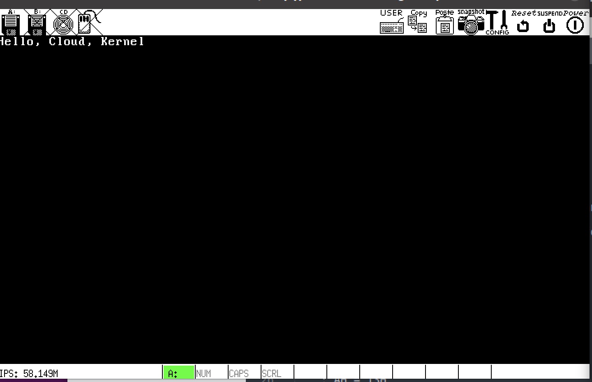

# 搭建操作系统
# 创建环境
我使用的是 ubuntu 的虚拟机系统，大家可以根据自己的喜好使用不同的操作系统
# 安装 gcc
命令行提示符 | | apt install gcc |
| | apt install make |
# 安装 nasm 编译器
命令行提示符 | | tar -xvf nasm-2.14.02.tar.gz -C /usr/local/os/ |
| | |
| | cd nasm-2.14.02 |
| | ./configure |
| | make |
| | sudo make install |
# 安装 Bochs 环境
Bochs 的所有硬件配置在 .bochsrc 文件中
利用 .bochsrc 文件来配置一个最简单的概念寄存器
.bochsrc 文件中注意以下配置
- floppy 和 boot: 表示 bochs 从软盘启动，软盘镜像是当前目录下的 boot.img
- log: 是 bochs 的执行日志
- debugger_log: 过去的调试记录。可以去分析问题和验证 cpu 的状态等，不用返回执行
参考的 .bochsrc 文件中将大部分数据都存在了 Output 目录下，所以需要提前在项目根目录下创建好 Ouput 文件夹
命令行提示符 | | |
| | sudo apt install bochs |
| | sudo apt install bximage |
# 编译镜像并运行
# step1. 准备一个 boot.asm 文件
命令行提示符 | | nasm boot.asm -o boot.bin |
知识回顾：当计算机加电自检后，BIOS 会把启动盘的第一个扇区加载到地址 0x7c00，并且执行其中的代码
这里给大家提供了个 boot.asm 文件示例
| org 0x7C00 |
| BASE equ 07C00H |
| |
| label_start: |
| mov ax, cs |
| mov ds, ax |
| mov es, ax |
| mov ss, ax |
| mov sp, BASE |
| |
| ; Clear screen |
| ; AH = 06H Scroll screen in a specific range |
| ; AL = 0 Clear screen |
| ; BH = 07H 0 - black screen; 7H - white font; |
| ; CH = start column number |
| ; CL = start row number |
| ; DH = end column number |
| ; DL = end row number |
| mov ax, 0600H |
| mov bx, 0700H |
| mov cx, 0 |
| mov dx, 0184FH ; 25 x 80 resolution |
| int 10H |
| |
| ; Display on screen: Start booting ... |
| ; AH = 13H |
| ; AL = 01 move the cursor to the end of string |
| ; BH = 0 |
| ; BL = 0FH Highlighted white color |
| ; CX = lenth of the string |
| ; DH = start row number |
| ; DL = start column number |
| ; ES:BP = address of the string |
| mov ax, 1301H |
| mov bx, 000FH |
| mov cx, 0014H |
| mov dx, 0000H |
| push ax |
| mov ax, ds |
| mov es, ax |
| pop ax |
| mov bp, booting_message |
| int 10H |
| |
| ; Reset floppy |
| ; DL = 00H floopy disk |
| ; DL = 80H hard disk |
| xor ah, ah |
| xor dl, dl |
| int 13H |
| |
| ; Hanging the system |
| jmp $ |
| |
| booting_message db 'Hello, Cloud, Kernel World!' |
| times 510 - ($ - $$) db 0 |
| dw 0xAA55 |
# step2. 创建一个软盘镜像作为启动盘
命令行提示符 | | bximage // 执行bximage命令 |
| | ======================================================================== |
| | bximage |
| | Disk Image Creation / Conversion / Resize and Commit Tool for Bochs |
| | $Id: bximage.cc 13481 2018-03-30 21:04:04Z vruppert $ |
| | ======================================================================== |
| | |
| | 1. Create new floppy or hard disk image |
| | 2. Convert hard disk image to other format (mode) |
| | 3. Resize hard disk image |
| | 4. Commit 'undoable' redolog to base image |
| | 5. Disk image info |
| | |
| | 0. Quit |
| | |
| | Please choose one [0] 1 |
| | |
| | Create image |
| | |
| | Do you want to create a floppy disk image or a hard disk image? |
| | Please type hd or fd. [hd] fd |
| | |
| | Choose the size of floppy disk image to create. |
| | Please type 160k, 180k, 320k, 360k, 720k, 1.2M, 1.44M, 1.68M, 1.72M, or 2.88M. |
| | [1.44M] |
| | |
| | What should be the name of the image? |
| | [a.img] boot.img |
| | |
| | Creating floppy image 'boot.img' with 2880 sectors |
| | |
| | The following line should appear in your bochsrc: |
| | floppya: image="boot.img", status=inserted |
# step3. 将二进制镜像写入到 boot image 的第一个扇区
命令行提示符 | | dd if=boot.bin of=boot.img bs=512 count=1 conv=notrunc |
# step4. 执行 bochs
直接执行 bochs
命令行提示符 | | bochs |
| | ======================================================================== |
| | Bochs x86 Emulator 2.7 |
| | Built from SVN snapshot on August 1, 2021 |
| | Timestamp: Sun Aug 1 10:07:00 CEST 2021 |
| | ======================================================================== |
| | 00000000000i[ ] BXSHARE not set. using compile time default '/usr/local/share/bochs' |
| | 00000000000i[ ] reading configuration from .bochsrc |
| | ------------------------------ |
| | Bochs Configuration: Main Menu |
| | ------------------------------ |
| | |
| | This is the Bochs Configuration Interface, where you can describe the |
| | machine that you want to simulate. Bochs has already searched for a |
| | configuration file (typically called bochsrc.txt) and loaded it if it |
| | could be found. When you are satisfied with the configuration, go |
| | ahead and start the simulation. |
| | |
| | You can also start bochs with the -q option to skip these menus. |
| | |
| | 1. Restore factory default configuration |
| | 2. Read options from... |
| | 3. Edit options |
| | 4. Save options to... |
| | 5. Restore the Bochs state from... |
| | 6. Begin simulation |
| | 7. Quit now |
| | |
| | Please choose one: [6] 6 |
此时如果你设置的是调试模式的话，cpu 会自动进入调试状态，并且停在命令行上等待输入指令
BIOS 会把引导扇区的代码加载到物理地址的 0X7C00 并且执行
我们来验证一下
命令行提示符 | | <bochs:1> pb 0x7C00 |
| | <bochs:2> c |
| | (0) Breakpoint 1, 0x00007c00 in ?? () |
| | Next at t=1955072 |
| | (0) [0x000000007c00] 0000:7c00 (unk. ctxt): mov ax, cs ; 8cc8 |
| | <bochs:3> n |
| | Next at t=1955073 |
| | (0) [0x000000007c02] 0000:7c02 (unk. ctxt): mov ds, ax ; 8ed8 |
| | <bochs:4> u 0x7c3e 0x7c7e |

完成以上步骤恭喜你，你的第一个 Hello, Cloud, Kernel World! 就在操作系统中打出来啦。！！！